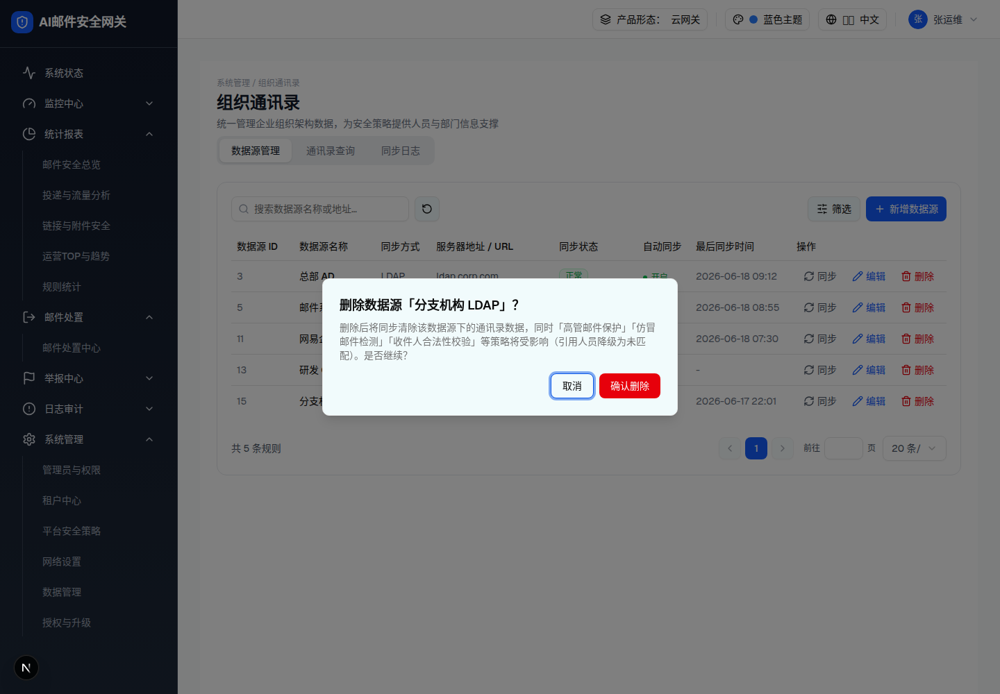

| 所属组件 | 2.2 数据源管理 Tab |
| 触发路径 | 层级0 行内「删除」（实测第 5 行「分支机构 LDAP」）→ 居中 AlertDialog + 遮罩 |
预览可操作：「取消」关闭；「确认删除」→ toast「数据源已删除」（demo 同时从列表移除该行）。
删除后将同步清除该数据源下的通讯录数据，同时「高管邮件保护」「仿冒邮件检测」「收件人合法性校验」等策略将受影响（引用人员降级为未匹配）。是否继续？

| 元素 | 规格（浏览器实测） |
|---|---|
| 标题 | 「删除数据源「分支机构 LDAP」？」（动态插入数据源名） |
| 正文 | 「删除后将同步清除该数据源下的通讯录数据，同时「高管邮件保护」「仿冒邮件检测」「收件人合法性校验」等策略将受影响（引用人员降级为未匹配）。是否继续？」——无「共 X 条」数据量，策略列表写死，§9-D5 |
| 按钮 | 「取消」/ 「确认删除」红色 bg-red-600 hover:bg-red-700 |
| 确认后 | 行移除 + toast「数据源已删除」（无撤销） |
| 比对项 | demo 实际 DOM | 嵌入的 HTML | 是否一致 |
|---|---|---|---|
| 根节点 | [role=alertdialog]（Radix AlertDialogContent，居中 max-w-lg） | 同（规格侧中和 fixed 居中定位） | 一致 |
| 节点数 | 7 | 7 | 一致 |
| 标题动态名 | 「分支机构 LDAP」 | 同 | 一致 |
| 确认按钮配色 | 红色 bg-red-600 | 同 | 一致 |